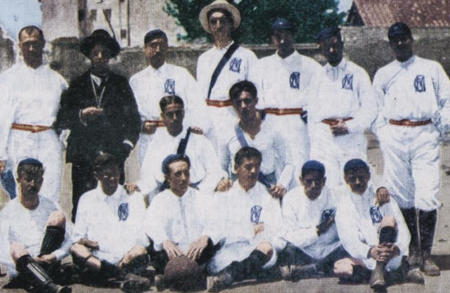
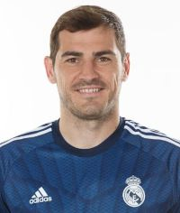

Real Madrid
Informácie
Real Madrid, je profesionálny futbalov칳 klub nachádzajúci sa v Madride v 맗anielsku. . Klub hrá domáce zápasy na 코tadióne Santiago Bernabéu s kapacitou 81 044 od roku 1947. Aktuálny tréner Realu Madridu je Carlo Ancelotti
Real Madrid má ve쬬 dlhodob칳ch rivalov, medzi ktor칳mi sú najznámej코칤 FC Barcelona, známe ako "El Clásico" , spoločne s Atléticom Madrid v takzvanom "El Derbi"


História
Klub bol zalo쬰n칳 6. marca 1902 ako Madrid Football Club, a u od začiatku nosil na domáce zápasy biele dresy. Slovo Real je po slovensky Kr치쬺vsk칳, toto udelenie dostal klub od kr치쬬 Alfonza XIII v roku 1920 spolu s kr치쬺vskou korunou na znaku Futbal doviedli do Madridu profesori a 코tudenti Institución Libre de Enseñanza. V roku 1895 zalo쬴li futbalov칳 klub Football Sky, ktor칳 hral ka쬯칠 nede쬹칠 ráno v Moncloe. V roku 1900 sa tento klub rozpadol na dva r칪zne kluby New Foot-Ball de Madrid a Club Español de Madrid. Prezidentom t칳chto klubov bol Julián Palacios. V roku 1902 sa tieto kluby znovu zjednotili a nov칳 klub niesol názov Sociedad Madrid Foot-ball Club. Prezidentom znovuspojeného klubu bol Juan Padrós Rubió, prv칳m sekretárom bol Manuel Medía a prv칳m klubov칳m pokladníkom bol José de Gorostizaga. V roku 1905, iba tri roky po zalo쬰ní, u Sociedad Madrid Foot-ball Club vyhral prv칳 pohár Copa del Rey. V roku 1920 Alfonz XIII udelil tímu mo쬹osť nosiť v názve slovo Real čo znamená kr치쬺vsk칳, odvtedy je názov tímu Real Madrid C.F. Klub Real Madrid má od roku 1930 aj svoj rezervn칳 tím Real Madrid Castilla.

Úspechy🏆
Národné
La Liga - 35 pohárov
Copa Del Rey - 20 pohárov
Supercopa de España - 12
Medzinárodné
Interkontinentálny pohár/Majstrovstvá klubov FIFA - 8 pohárov
Európsky pohár majstrov/Liga majstrov UEFA - 14 pohárov
Pohár UEFA/Európska liga UEFA - 2 poháre
Superpohár UEFA - 5 pohárov

Legendy
Cristiano Ronaldo🐐
Pozícia: Útočník
Národnosť : Portugalská
V Reale Madrid: 2009 - 2018
Bilance: 438 zápasov, 451 gólov

Alfredo di Stéfano
Pozícia: Útočník
Národnosť : Argentínska
V Reale Madrid: 1953 - 1964
Bilance: 396 zápasov, 308 gólov

Ferenc Puskás
Pozícia: Útočník
Národnosť: Maďarská
V Reale Madrid: 1958 - 1967
Bilance: 262 zápasov, 242 gólov
Iker Casillas
Pozícia: Brankár
Národnosť : 맗anielská
V Reale Madrid: 1999 - 2015
Bilance: 725 zápasov

Zinedine Zidane
Pozícia: Zálo쬹칤k
Národnosť: Francúzska
V Reale Madrid: 2001 - 2006
Bilance: 227 zápasov, 49 gólov

Real madrid official website
Real madrid wikipedia